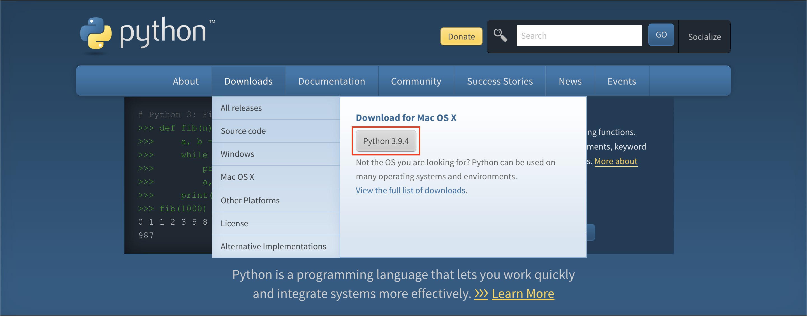
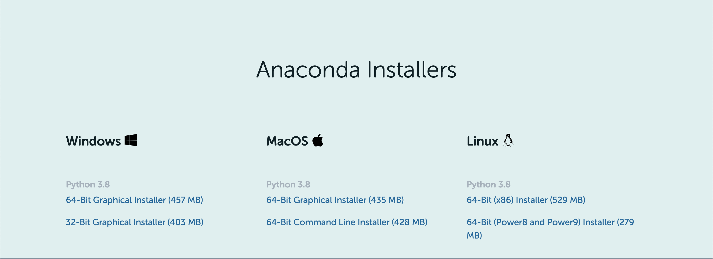
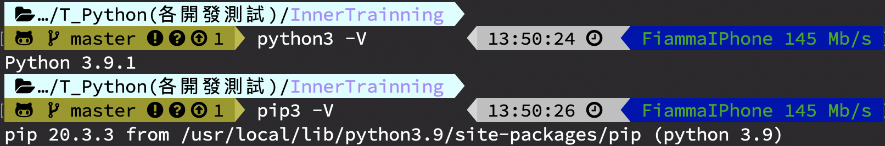
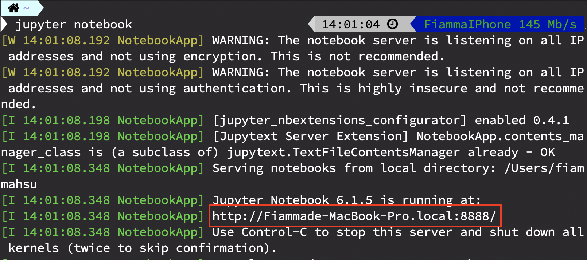
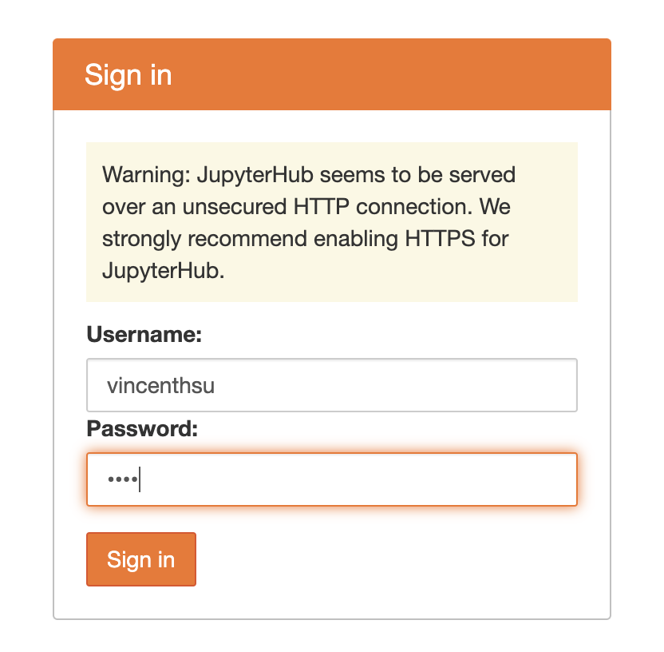

Python 的安裝¶
需要安裝
廢話
總要知道自己安裝了什麼啊
不論是什麼安裝方法 安裝方法等等提
Python 安裝的都是 「 翻譯器 」
安裝完後 使用 python
就直接
/PATH_TO_PYTHON/python 寫好的Script.py
Note
有兩個版本
Python 2 系列: 已經停止版本更新 不過 MacOS 這種系統仍然留有
Python 3 系列: 目前的主流版本 3.7
現在的 Linux （ RedHat & Ubuntu 都已經預設安裝 3.6.9 ）
安裝方法¶
依據 OS 不同 ， 有幾種不同的安裝方法
Python官網 給的安裝檔¶
Pure Python
不會安裝任何 額外 Package
Note
官方網站會根據你的 OS 來給你安裝檔 不過都會給最新版 目前最新版 3.9.4 2021/04/16

32bit VS 64bit （ Windows 才有的問題 ）
2019的時候 連 MacOS Catalina 都停止支援 32 bit
Machine Learning 使用的函式庫 （e.g. Keras，TensorFlow ） 都強制用 64 bit
除非特殊需求 比如打包 exe 這種需要 向下支援 可以用 32 bit
Anaconda 安裝包¶
Anaconda 整合了 Keras 、 Tensorflow 等 Machine Learning Package
所以安裝 Anaconda 等於 裝了 Python + Package
且 Anaconda 有管理套件專用的 conda install PACKAGE_NAME

安裝後測試¶
如果你是 Windows 打開 cmd.exe
如果你是 MacOS or Linux 打開 Terminal
輸入 python -V 或是 python3 -V
Note
視安裝方法的不同 可能要指定 python3
特別是系統本身就有 python2 的 OS 也只有MacOS
再測試 pip -V 或 pip3 -V
確認 python 內建套件管理 有順利安裝

輔助開發工具¶
有了翻譯器,其實我們已經可以開始寫程式了
不過我會建議安裝個輔助開發工具來幫你開發
這邊我推薦 PyCharm 作為主要的輔助開發工具
使用上 跟 Eclipse 相似
一次性執行 、 自動補完 等等功能
另類開發工具 Jupyter Notebook¶
Jupyter Notebook 其實是 Python 的一個套件
讓使用者在網頁上開發 Python Code
並且每次執行的結果 、 變數 都會被保留下來
作為 學習環境 、 快速測試 非常好用
安裝 jupyter notebook
要安裝 jupyter nb 非常簡單
pip3 install jupyter
或
pip install jupyter
便可以
安裝完成後
打開 cmd.exe or Terminal
jupyter notebook
之後將看到的網址 複製貼上 瀏覽器

沒錯 我們也有開 Jupyter Notebook Server 給大家用
這次都以 Jupyter Notebook 作為開發學習環境
登入記得用自己的帳號
密碼隨便輸入 但是要記得輸入的
